세라믹사이딩 제품 특장점
세라믹사이딩 제품의 특장점들을 소개합니다.
고강도 세라믹사이딩(High-strength Ceramic Siding)
목분의 벌집구조
나치하 세라믹사이딩에 함유된 목분은 파이프와 같은 세포가 연결된 벌집 구조로 동결시 팽창되는 수분의 압력을 흡수 및 완화시키는데 도움이 됩니다.

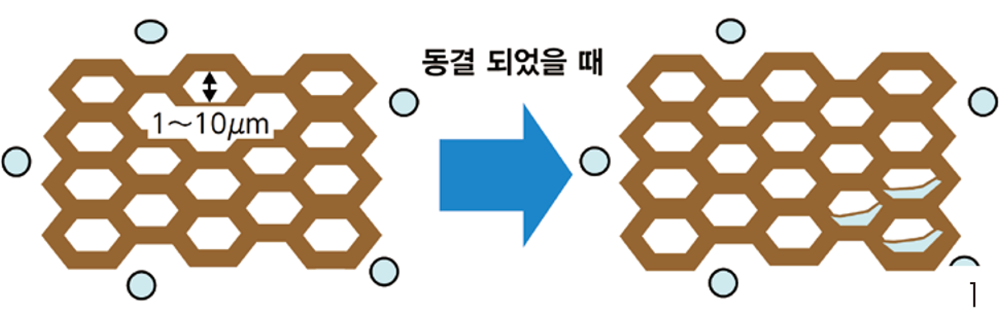

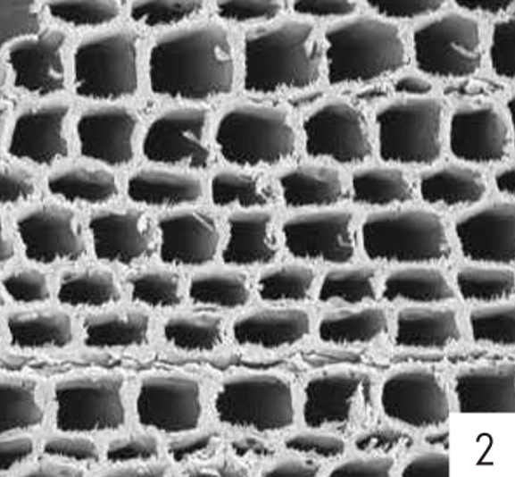

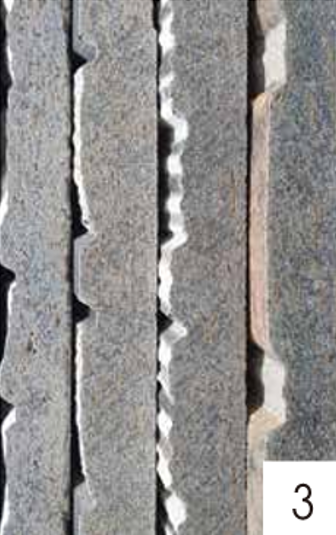
휨과 충격에 강함
타사의 제품과 달리, 목분이 함유된 압착성형 방식의 중공층 없이 생산된 니치하세라믹사이딩은 휨과 충격에 강하며, 고온, 고압의 오토클레이브(가압열처리)방식으로 생산되어 치수의 안정성이 뛰어납니다.

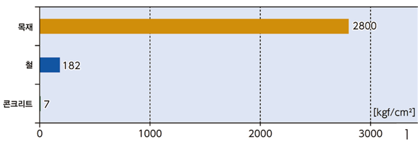

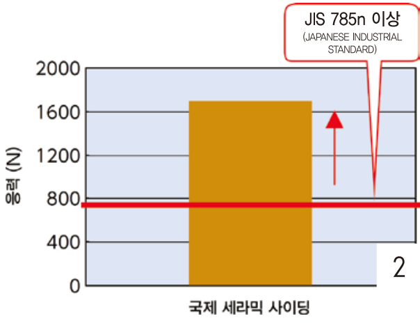
준불연재(Fire Resistance)
불에 강한 방진/내화 성능
『목재는 불에 약하고, 철은 불에 강하다』 라고 이야기 합니다. 하지만 실제로 화재 발생시 철은 어느 정도의 온도가 넘으면 강도가 20% 이하로 떨어지는 경우가 있습니다.
반면에 목재는 같은 조건에서 80%의 힘을 유지하는 것으로 확인되었습니다.
이유는 표면이 탄화되어 단열재의 특성을 발휘하는 것으로 목재 중심부까지 열이 전달되기 어렵기 때문입니다.
니치하 세라믹사이딩은 일본국토교통(JIS)에서 인증받은 준불연재입니다. JIS의 최고 등급인 불연재 또는 준불연재로 국토교 등급 또는 3등급에 해당하며, 우수한 화재 안정성을 보유하고있습니다.
이 목재의 특성을 활용하여 준불연재료인 『니치하 세라믹사이딩』은 JIS에서 인정받은 내화성능이 우수한 외벽으로 1시간 내화구조를 가능하게 합니다.

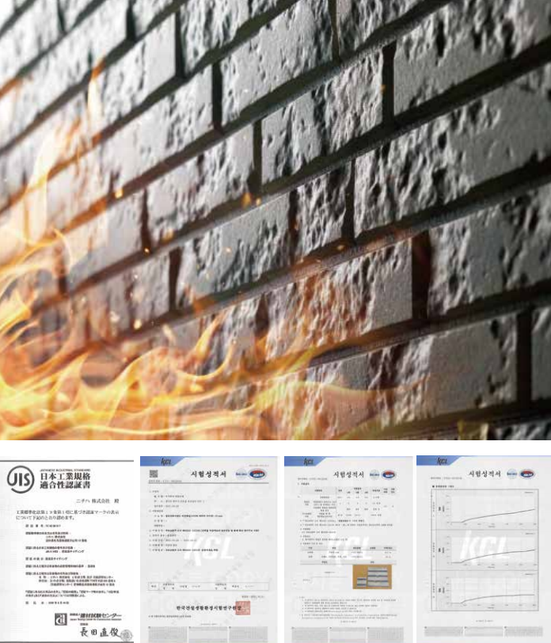
저 탄소 시스템(Low Carbon System)
자연과의 공존
환경과의 공존과 건물의 Long Life를 위한 시스템은 일본 『일본 레지언스 어워드』에서 3년 연속 높은 평가를 받았습니다.
CLT 건축물에 목재를 사용한 세라믹사이딩을 건축물의 외장재와 하지재료로 사용하여, 목재의 재활용 부분을 높인 재료로서 친환경성에 대한 높은 평가를 받았습니다.

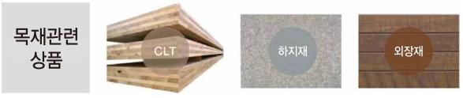

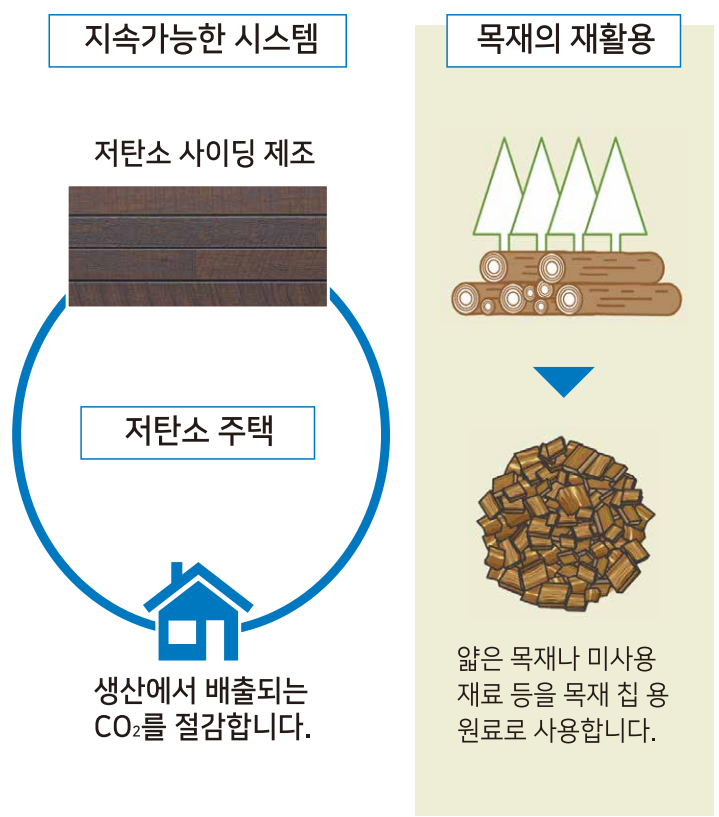
단열성능(Thermal Resistance)
뛰어난 열 저항성
니치하 세라믹사이딩은 모르타르벽에 비하여 열저항성이 뛰어나 쾌적한 실내환경을 기대할 수 있습니다.


잉크젯 프린팅 시스템(Inkjet Printing System)
섬세한 색상 조합으로 재료의 질감을 극대화
차세대 잉크젯 프린트 기술은 질감의 요철과 상관업시 세밀한 인쇄가 가능합니다. 그로 인하여 재료의 실질적인 질감과 다채로운 색상의 표현이 가능합니다.

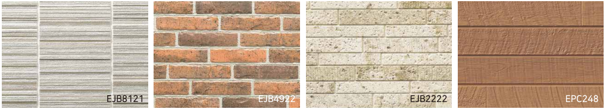
자연스러운 질감과 색감의 표현
표면의 요철 하나 하나에 다채로운 표현이 가능하기에 질감과 자연스러운 마감이 가능합니다.
또한 부자연스러운 규칙성이 없으므로 한 장 한 장의 색상이 다릅니다. 종전의 프린트 방식에서는 경험할 수 없는 색감을 발휘합니다.

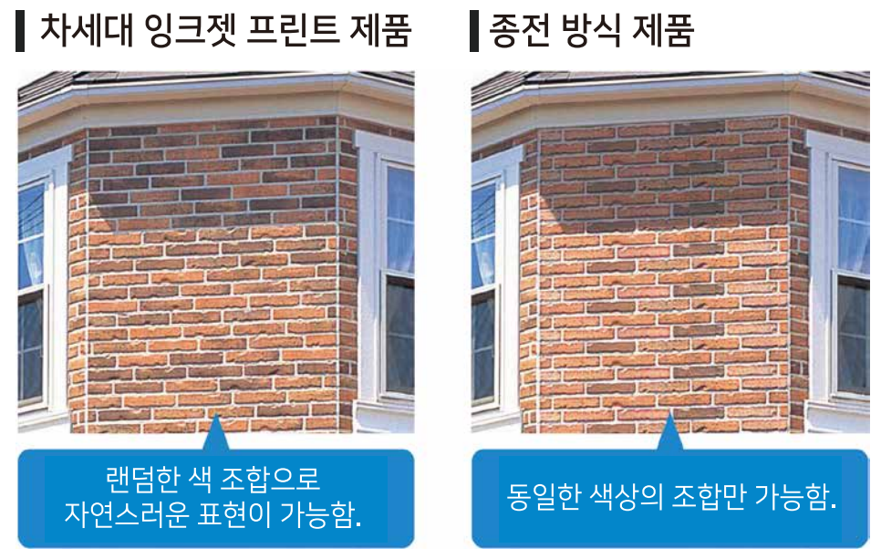
다양한 잉크젯 프린팅 시스템

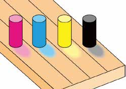

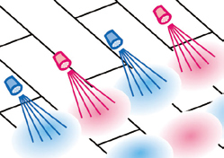

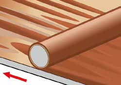

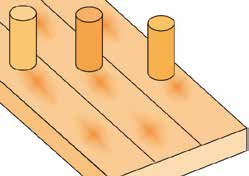

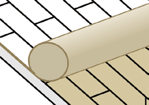
마이크로 가드(Micro Guard)
나노 친수 마이크로 가드 코팅
차세대 잉크젯 프린트 기술은 질감의 요철과 상관업시 세밀한 인쇄가 가능합니다. 그로 인하여 재료의 실질적인 질감과 다채로운 색상의 표현이 가능합니다.

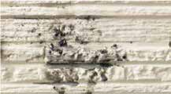

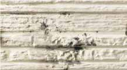

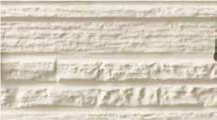

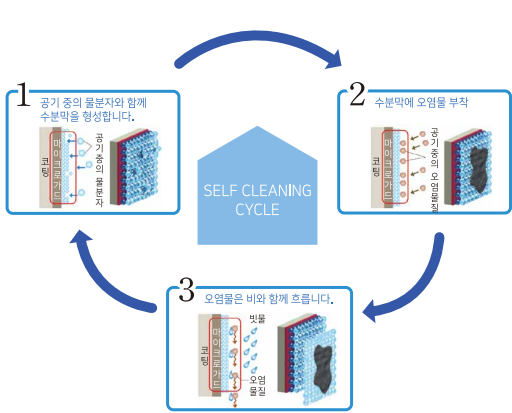
플래티넘 코팅(Platinum Coating)
초고내후성 도료

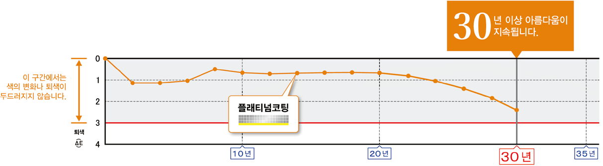
자외선에 강한 플래티넘 코팅
플래티넘 코팅은 443KJ/mol의 결합 에너지를 가지며, 단지 413KJ/mol인 자외선의 결합 에너지보다 높으며, 따라서 사이딩을 자외선 손상으로부터 완전히 보호합니다.

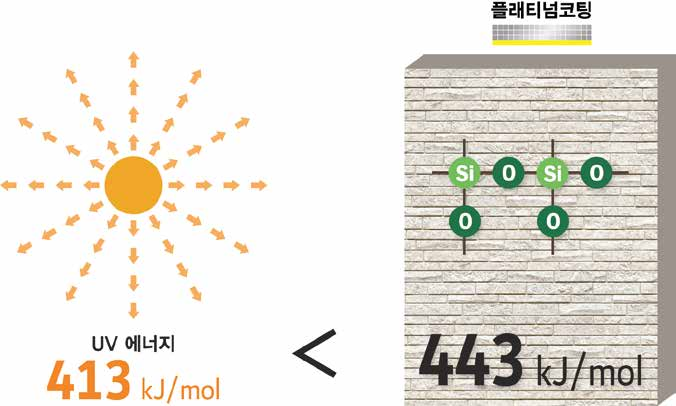
하이퍼코팅(Hiper Coating)
자연열화에 강한 제품
강한 햇살, 눈, 비 등으로 인한 가혹한 자연환경에 노출되어 있는 외벽은 일반적으로 5~7년 정도에 표면의 도막이 약해지기에 재도장을 할 필요가 있습니다. 하지만, 자외선에 강한 니치하 하이퍼코트 상품은 외벽 코팅의 기대 수명이 15~20년 정도이며, 변색과 퇴색 10년 보증을 실현했습니다


건식 공법(Dry)
건식 공법
건식시공에 의한 통기공법은 공기가 배출될 수 있는 공간을 확보하여 습기를 배출함으로서 결로방지 및 차열 효과가 있습니다.

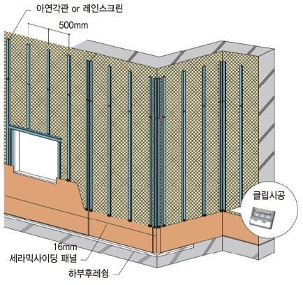
통기 공법(Ventilation Method)

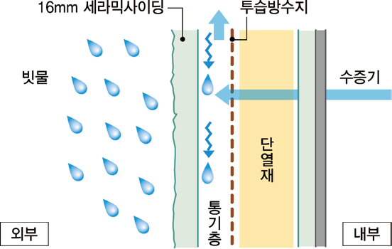

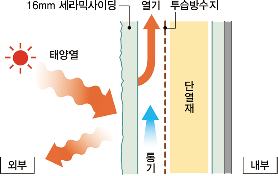
내진 설계(Earthquake Resistant)
지진이 일어났을 때, 주택의 부담을 덜어줍니다.
외장재가 무거우면 지진이 일어났을 때 주택의 부담이 가중됩니다.
니치하 세라믹 사이딩의 경우, 주택 1동에 걸리는 하중은 모르타르로 시공한 주택의 1/2이하로, 지진이 있을 때 주택에 걸리는 하중을 경감시켜줍니다.

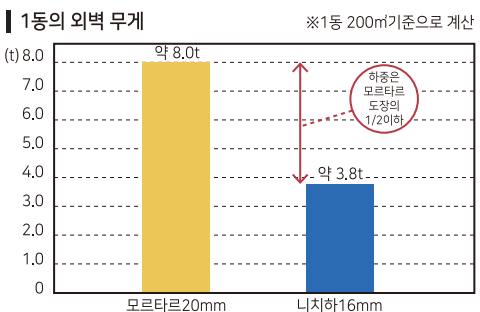
지진이 충격에도 강함을 발휘합니다.
1995년 한신대지진의 피해를 조사한 결과, 세라믹사이딩을 사용한 주택의 85%는 피해가 없고 그 외의 주택에서도 파손이나 일부의 탈락 등의 작은 피해만 있었습니다.

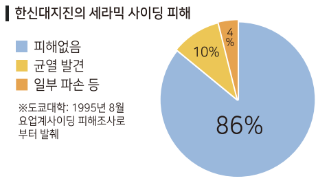
균열을 방지하여 외장재의 파손을 박는 전용 클립 공법
전용클립을 사용한 시공으로 외벽재와 구조체를 완전히 고정하지 않기 때문에 지진의 힘이 가해져도 외벽의 응력을 전달하기 어렵습니다. 그로 인하여 균열과 탈락을 방지합니다.

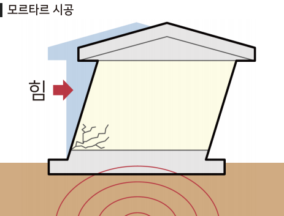

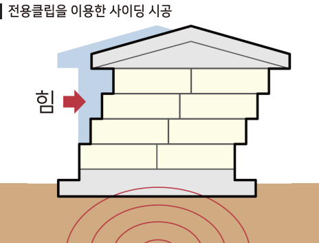